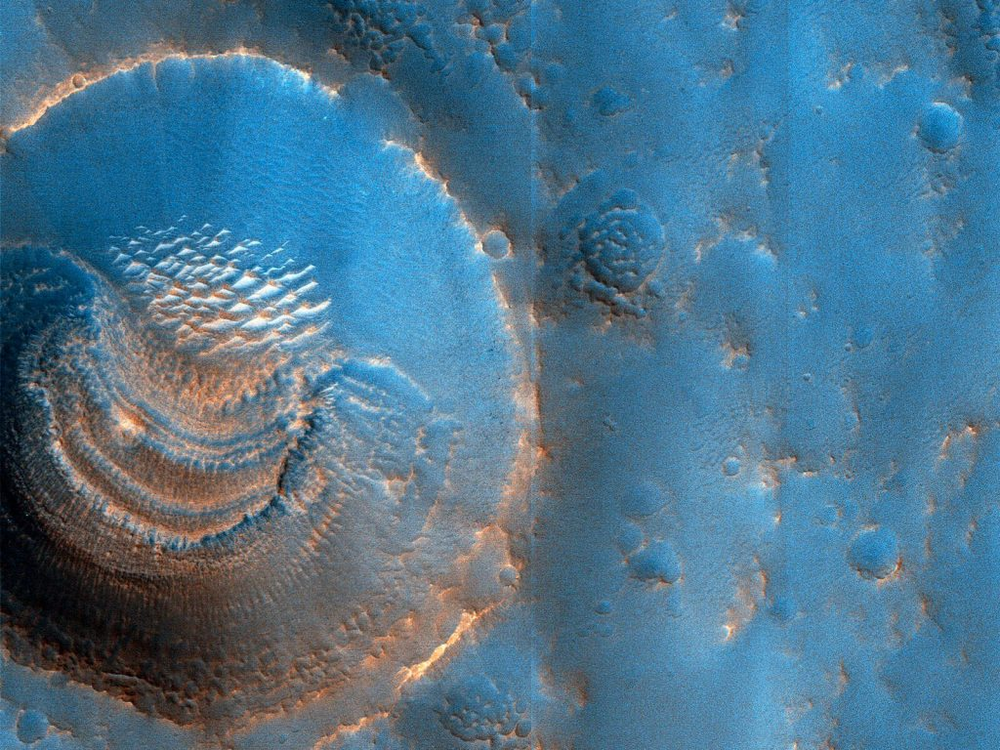
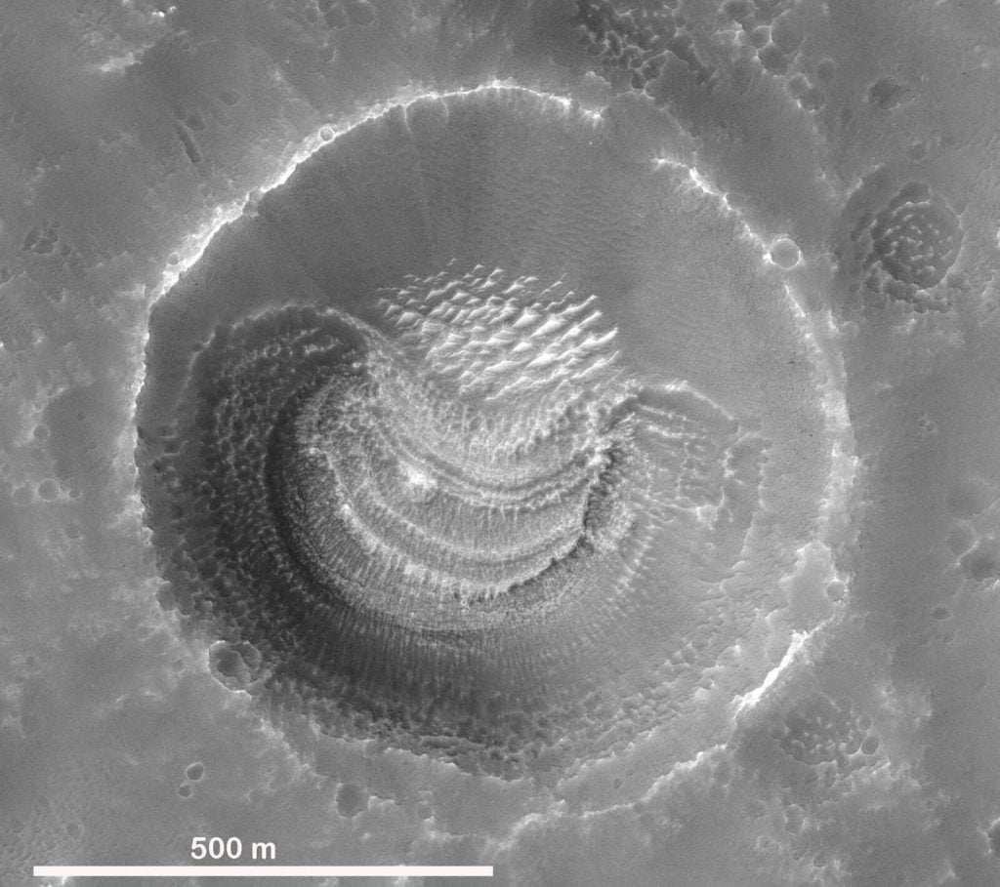

နက္ခတ် ပညာရှင် တွေအကြား မှာလဲ အင်္ဂါဂြိုဟ်ဟာ ပဟေဠိ တွေနဲ့ ပြည့်နှက်လို့ နေပါတယ်။ ဥပမာ အင်္ဂါဂြိုဟ် ပေါ်မှာ သက်ရှိတွေ ရှိခဲ့ ဘူးသလား၊ အင်္ဂါဂြိုဟ်ရဲ့ ဝင်ရိုးစွန်း ရေခဲပြင် အောက်ထဲမှာ ပုန်းကွယ်နေတဲ့ ရေကန်တွေ ရှိနေသလား ဆိုတဲ့ မေးခွန်းမျိုးတွေ ဖြစ်ပါတယ်။
နာဆာက လွှတ်တင်ထား ခဲ့တဲ့ မားစ် စူးစမ်းလေ့လာရေး ဂြိုဟ်တု (Mars Reconnaissance Orbiter) က ရိုက်ကူးထား ခဲ့တဲ့ ပုံရိပ်တွေကို နာဆာက ထုတ်ပြန် ထားပါတယ်။
ဒီ ပုံတွေ ထဲမှာ အင်္ဂါဂြိုဟ်ရဲ့ အာရေဗီယာ ကုန်းမြေ ဒေသ (Arabia Terra region) က ဥက္ကာတွင်း တွေကို အင်္ဂါဂြိုဟ် ပတ်လမ်းကနေ ရိုက်ကူးထားတဲ့ ဓါတ်ပုံလဲ အပါအဝင် ဖြစ်ပါတယ်။
ဒီ ပုံတွေကို မားစ် စူးစမ်းလေ့လာရေး ဂြိုဟ်တုမှာ တပ်ဆင်ထားတဲ့ HiRise ကင်မရာနဲ့ ရိုက်ကူး ထားခဲ့တာ ဖြစ်ပါတယ်။ ဒီပုံမှာ ဥက္ကာတွင်းကြီး တစ်ခုရဲ့ အောက်ခြေ ကြမ်းပြင်မှာ ဖြစ်ပေါ်နေတဲ့ ထူးဆန်းတဲ့ ပုံသဏ္ဍာန် တွေကို အထင်အရှား မြင်တွေ့ ကြရမှာ ဖြစ်ပါတယ်။
ဒီ ဥက္ကာတွင်းကြီးဟာ အကျယ်အဝန်း အားဖြင့် အချင်း မီတာ ၈၀၀ ခန့် ကျယ်ဝန်းပါတယ်။ သူ့ရဲ့ အောက်ခြေမှာ ပုံသဏ္ဍာန် အမျိုးမျိုးကို တွေ့မြင် ကြရပါတယ်။ ထင်ရှားတဲ့ သွင်ပြင်ကတော့ ကန့်လန့်ဖြတ် ဖြစ်ပေါ်နေတဲ့ အလွှာလွှာ အချပ်ချပ်တွေပဲ ဖြစ်ပါတယ်။ ဒီ အလွှာချပ် တွေဟာ အရင် တချိန်က နှုန်းမြေတွေ အနည်ကျ ရာက ဖြစ်ပေါ်လာ ခဲ့တဲ့ အလွှာတွေ ဖြစ်နိုင်တယ်လို့ ပညာရှင် တွေက သုံးသပ် ကြပါတယ်။

ဒီလို ပုံသဏ္ဍာန်တွေကို ဥက္ကာတွင်း တစ်ခုထဲ မှာပဲ တွေ့မြင်ရတာ မဟုတ်ပါဘူး။ ဒီ အာရေဗီယာ ဒေသက ဥက္ကာတွင်း တွေအနက်က အချင်း မီတာ ၆၀၀ နဲ့ အထက်ရှိတဲ့ ဥက္ကာတွင်း အများစုရဲ့ အောက်ခြေမှာ အလားတူ အသွင်သဏ္ဍာန် တွေကို အများအပြား ရှာဖွေ တွေ့ရှိ ထားကြပါတယ်။
နောက်ပြီး ဒီလို အသွင်သဏ္ဍာန် တွေကို ဥက္ကာတွင်း ကြီးတွေရဲ့ အောက်ကြမ်းပြင် တောင်ဖက်ခြမ်း မှာပဲ တွေ့ကြရပါတယ်။ ဥက္ကာတွင်း တွေရဲ့ မြောက်ဖက် ခြမ်းတွေမှာ ဒီလို အသွင်သဏ္ဍာန် တွေ မရှိပဲ ရှင်းလင်းနေ ကြပါတယ်။
ပညာရှင်တွေ အနေနဲ့ ဒီ မြေပြင် သဏ္ဍာန်တွေ ဘယ်လို ဖြစ်ပေါ်လာခဲ့ကြ သလဲ ဆိုတာနဲ့ ပတ်သက်လို့ အတိအကျ အဖြေ ပေးနိုင်ခြင်းတော့ မရှိကြ သေးပါဘူး။ ဒါပေမယ့် ဒီ မြေမျက်နှာ သွင်ပြင် သဏ္ဍာန် တွေဟာ အရင် တချိန်က မားစ်ဂြိုဟ် မျက်နှာပြင် ပေါ်က ရေခဲတွေ အငွေ့ပျံ သွားရာက (ရေခဲကနေ အရည် မပျော်ပဲ တိုက်ရိုက် အငွေ့ပျံ သွားရာက) ဖြစ်ပေါ်လာခဲ့ကြတာ ဖြစ်နိုင်တယ်လို့ အချို့က သုံးသပ် ကြပါတယ်။

ဒီ သွင်ပြင်တွေကို ကြည့်ခြင်းအားဖြင့် မားစ်ပေါ် ကျတဲ့ ဥက္ကာခဲအကြီးတွေဟာ မားစ်ရဲ့ မြေအောက် ၄၅ မီတာကနေ မီတာ ၆၀ အနက်မှာ ရှိတဲ့ မြေအောက်ရေကြော တွေအထိ ဖောက်ထွင်း ဝင်ရောက် သွားခဲ့ ကြပုံ ရတယ်လို့ ပညာရှင် တွေက သုံးသပ် ကြပါတယ်။ ဒီအနက်ထိရောက်သွားတဲ့ အတွက် ဥက္ကာတွင်း ကြီးတွေ ဖြစ်ပေါ်ပြီးပြီးချင်းပဲ ဒီတွင်းတွေဟာ ရေလွှမ်း ခံခဲ့ ကြပုံ ရပါတယ်။
ဒီ တွင်းတွေထဲက ရေတွေ ခဲသွား ပြီးတဲ့နောက် အငွေ့ပျံ သွားခဲ့ ရာက ဒီလို ထူးဆန်းတဲ့ သွင်ပြင်တွေ ဖြစ်ပေါ် လာခဲ့ပုံ ရတယ်လို့ နာဆာ ပညာရှင် တွေက သုံးသပ် ပြောကြား ပါတယ်။
Ref: Mysterious Crater Deposits | LPL